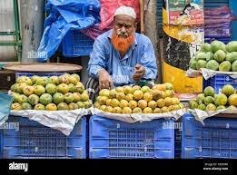

Mango plantation: A reminder of how NREGA can tremendously contribute to rural development
The Mahatma Gandhi National Rural Employment Guarantee Act (NREGA) is often seen as another name for digging holes. This view is unfair, since NREGA supports a wide variety of projects . It also overlooks the fact that some holes are quite useful. Wells and ponds are two examples. A careful evaluation of NREGA wells in Jharkhand by the Institute for Human Development (IHD), published in 2016, found that they were very productive. Another example is a hole where you plant a mango tree. Digg . Read More
